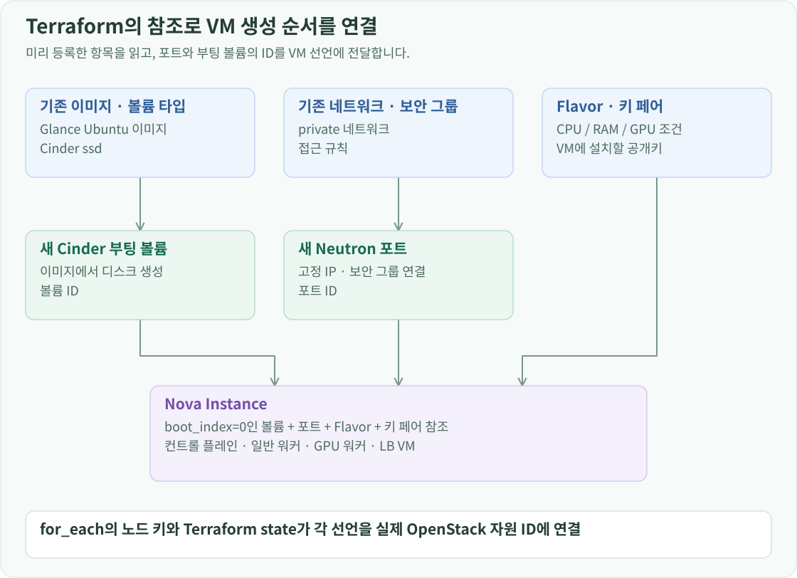
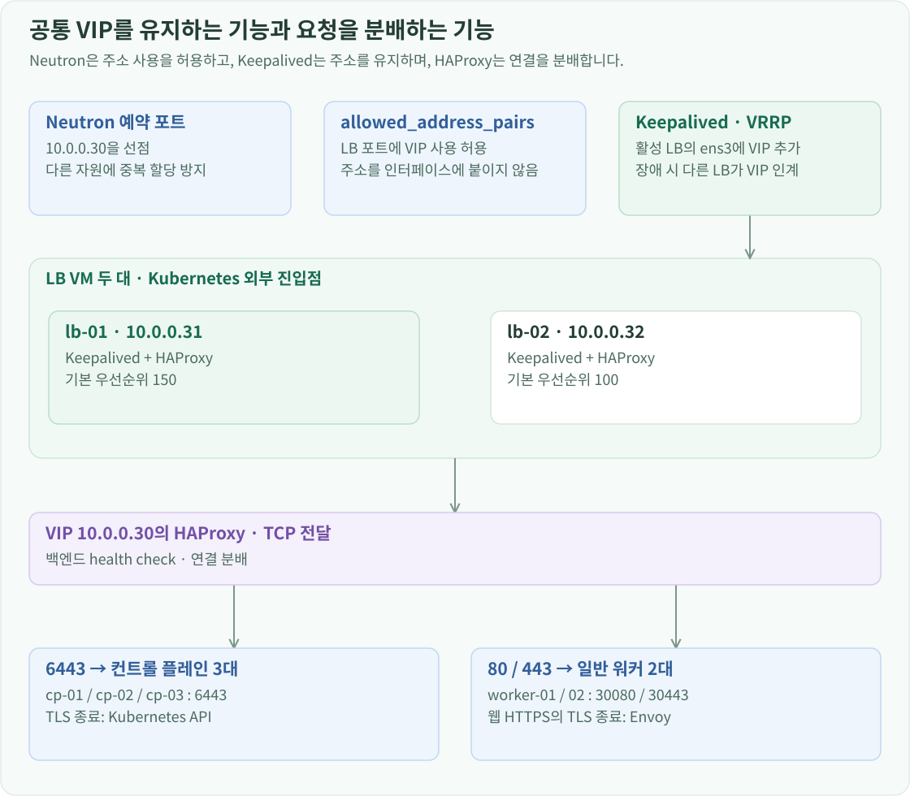

구축 개요
OpenStack에서 VM·네트워크·SSD·GPU를 제공할 수 있게 된 다음에는 그 VM들을 Kubernetes 클러스터로 묶었습니다. 모델 서버 하나뿐 아니라 Gateway, WebUI, 모니터링과 각종 컨트롤러를 함께 운영해야 했기 때문에 역할별 노드 구성을 선택했습니다.
컨트롤 플레인은 3대로 나눠 API와 etcd를 구성하고, 일반 워커 2대에는 운영 구성요소와 일반 앱을, GPU 워커에는 추론 워크로드를 배치했습니다. 클러스터 바깥의 LB VM 2대는 설치 시점부터 API의 고정 진입점을 제공합니다. VM에 할당한 메모리 합계는 30 GiB로 잡아, 48 GB 장비에서 OpenStack 서비스와 호스트가 사용할 공간도 남겼습니다.
Terraform으로 역할별 VM 만들기
VM은 역할별로 이름·IP·Flavor·부팅 볼륨 크기를 선언하고 Terraform으로 생성했습니다. 노드 정의를 하나의 맵으로 관리하고 for_each로 포트·볼륨·인스턴스를 연결해, 각 VM의 구성과 실제 OpenStack 자원을 대응시켰습니다.

Terraform은 셸 명령을 순서대로 재실행하는 도구가 아닙니다. 설정에 적은 원하는 상태와 OpenStack의 실제 상태를 비교해 변경 계획을 만듭니다. state는 cp-01 같은 설정 속 자원이 어느 OpenStack UUID에 대응하는지 기록합니다. 기존 이미지·네트워크를 data로 찾아 참조하고, 새 포트·볼륨·인스턴스는 resource로 관리했습니다. for_each의 노드 이름을 고정 키로 사용하면 목록 중간에 노드를 추가해도 다른 노드의 식별자가 배열 순서에 따라 밀리지 않습니다.
Flavor는 VM의 vCPU·메모리 같은 크기와 추가 배치 조건을 묶은 OpenStack 자원입니다. 컨트롤 플레인·일반 워커·GPU 워커·LB의 Flavor를 나누고, 각 VM이 자신의 역할에 맞는 Flavor를 참조하게 했습니다.
| VM | 사설 IP | vCPU | 메모리 | SSD 부팅 볼륨 | 역할 |
|---|---|---|---|---|---|
cp-01 |
10.0.0.11 |
2 | 4 GiB | 32 GiB | 컨트롤 플레인·etcd |
cp-02 |
10.0.0.12 |
2 | 4 GiB | 32 GiB | 컨트롤 플레인·etcd |
cp-03 |
10.0.0.13 |
2 | 4 GiB | 32 GiB | 컨트롤 플레인·etcd |
worker-01 |
10.0.0.21 |
2 | 4 GiB | 40 GiB | 일반 워커 |
worker-02 |
10.0.0.22 |
2 | 4 GiB | 40 GiB | 일반 워커 |
gpu-worker-01 |
10.0.0.23 |
4 | 8 GiB | 80 GiB | GPU 워커 |
lb-01 |
10.0.0.31 |
1 | 1 GiB | 20 GiB | HAProxy·Keepalived |
lb-02 |
10.0.0.32 |
1 | 1 GiB | 20 GiB | HAProxy·Keepalived |
LB 2대를 제외한 6대가 Kubernetes 노드입니다. GPU 워커에는 일반 워커보다 많은 메모리를 배정하고, 앞에서 만든 GPU Flavor를 사용했습니다.
Terraform은 Neutron 포트를 먼저 만들고 고정 IP와 보안 그룹을 지정합니다. Nova 인스턴스는 그 포트를 참조합니다. 주소를 VM 생성 시 임의로 할당받는 대신 노드 정의에 고정했기 때문에, Kubespray 인벤토리와 LB의 backend 주소도 같은 값을 사용할 수 있습니다.
부팅은 Glance 이미지에서 만든 Cinder 볼륨을 사용합니다. Flavor의 로컬 디스크는 0으로 두고, ssd 타입의 부팅 볼륨을 boot_index=0으로 연결했습니다. 인스턴스 삭제에 따라 볼륨까지 자동으로 삭제되지 않게 설정해 VM과 디스크의 수명을 분리했습니다.
포트·볼륨·인스턴스를 각각 선언하고 서로의 ID를 참조하면 Terraform이 이 참조로 의존 관계를 만듭니다. 따라서 HCL 파일을 위에서 아래로 실행해서 순서를 맞추는 것이 아니라, 필요한 자원이 준비된 뒤 그것을 참조하는 자원을 생성합니다. 부팅 볼륨의 delete_on_termination=false는 Nova가 VM 종료와 함께 볼륨을 자동 삭제하지 않게 하는 설정입니다. 볼륨 자체를 Terraform의 삭제 대상으로 지정하는 동작과는 구분해서 관리했습니다.
Mac의 Terraform 작업 디렉터리에서 실행한 기본 흐름은 다음과 같습니다.
terraform init
terraform plan
terraform apply
init은 OpenStack provider와 작업 환경을 준비합니다. plan에서는 새로 만들거나 바꾸거나 교체할 자원을 확인하고, apply로 OpenStack API에 반영합니다. Flavor나 부팅 조건을 바꾸면 단순 속성 수정이 아니라 VM 교체가 필요한 경우도 있으므로, 적용 전에 계획을 확인했습니다. 여기서 만드는 것은 VM과 그 주변 자원이며, VM 안의 Kubernetes 설치는 다음 단계의 Kubespray가 담당합니다.
SSH에는 k8s-lab-key 키 페어를 사용합니다. OpenStack에는 공개키를 등록하고, Ubuntu cloud image의 cloud-init이 이를 ubuntu 사용자의 로그인 키로 반영합니다. Mac의 개인키는 Terraform과 별도로 보관하며, 이후 Kubespray도 이 SSH 연결을 이용합니다.
키 페어 이름은 VM에 주입할 공개키를 선택하는 값입니다. 접속할 때는 Mac이 개인키로 서명하고, VM이 등록된 공개키로 이를 확인합니다. 개인키를 VM에 보내는 방식이 아닙니다. 개인키 파일의 암호는 로컬에서 그 키를 여는 암호이고 VM 계정 비밀번호와도 다릅니다. 또한 SSH가 처음 보여 주는 서버 지문은 접속할 서버의 신원을 확인하는 호스트 키로, 로그인에 사용하는 사용자 키와 별개의 확인입니다.
보안 그룹은 클러스터 내부 노드 간 통신과 관리자의 접근을 나누었습니다. 노드끼리는 같은 보안 그룹을 기준으로 통신을 허용하고, SSH·Kubernetes API·웹 진입 포트에는 필요한 관리망과 VPN 출발지 범위를 지정했습니다. VM의 IP가 고정되어 있어도 보안 그룹이 막으면 SSH와 API에 접근할 수 없으므로 네트워크 경로와 함께 준비했습니다.
공개키는 VM에, 개인키는 관리 측에
OpenStack 키 페어 k8s-lab-key에는 SSH 공개키를 등록합니다. Ubuntu cloud image의 cloud-init이 그 공개키를 ubuntu 계정의 로그인 키로 설치합니다. Mac의 SSH와 Kubespray는 대응하는 개인키로 인증합니다.
개인키는 OpenStack 키 페어 조회로 다시 가져오는 값이 아닙니다. VM 생성 과정에 등록하는 것은 공개키이며, 관리 측에서 보관하는 개인키가 있어야 SSH 로그인 서명을 만들 수 있습니다.
사설망 접근과 API·웹 진입점 구성
VM마다 Floating IP를 붙이지 않고 사설망으로 접근
Kubernetes 노드에는 10.0.0.x 사설 IP를 사용합니다. Mac에서 이 주소로 접근하려면 공유기와 OpenStack 호스트가 그 대역으로 가는 경로를 알아야 합니다.
집의 공유기에는 10.0.0.0/24를 OpenStack 호스트 192.168.50.217로 보내는 경로를 등록했습니다. 호스트에는 그 패킷을 Neutron Router의 외부 주소 172.24.4.167로 보내는 경로가 있습니다.
목적지 10.0.0.0/24
공유기 → 192.168.50.217(OpenStack 호스트)
호스트 → 172.24.4.167(Neutron Router)
라우터 → private 네트워크의 VM
호스트의 경로는 임시 ip route 명령으로만 두지 않고 NetworkManager 프로필에 저장했습니다.
sudo nmcli connection modify kolla-veth-host \
+ipv4.routes "10.0.0.0/24 172.24.4.167"
sudo nmcli device reapply veth-host
+ipv4.routes는 기존 경로를 지우지 않고 VM 대역의 경로를 추가합니다. reapply는 변경한 설정을 인터페이스에 반영합니다. 이 경로를 따라 VM 대역의 패킷은 veth-host를 거쳐 Neutron Router 172.24.4.167로 전달됩니다. 이 경로와 함께 양방향 forwarding·보안 그룹도 허용했습니다.
직접 라우팅에서는 목적지 10.0.0.12를 그대로 유지하고 다음 홉만 바꿉니다. 반면 Floating IP는 외부 주소로 받은 요청의 목적지를 VM의 사설 주소로 DNAT합니다. Floating IP를 VM 안에 두 번째 IP로 직접 설정하는 것은 아닙니다. 여기서는 노드 여러 대를 같은 사설 주소로 관리하려고 라우팅 방식을 사용했습니다.
외부에서는 공유기의 WireGuard VPN으로 들어옵니다. VM이 보는 출발지 주소는 외부 Wi-Fi의 공인 IP가 아니라 VPN 내부 주소인 10.6.0.2입니다. 따라서 보안 그룹에는 VPN 내부 주소를 기준으로 SSH와 API 접근을 허용했습니다. 요청이 VM에 도달하는 경로뿐 아니라 응답이 Neutron Router·호스트·공유기를 거쳐 VPN 클라이언트로 돌아오는 경로도 함께 맞췄습니다.
WireGuard의 인터넷 패킷은 VPN 데이터를 감싼 바깥쪽 전송입니다. 공유기가 이를 풀면 내부의 10.6.0.2 → 10.0.0.x 패킷이 라우팅됩니다. 그래서 집 밖에서 사용한 공인 IP를 보안 그룹에 넣는 것과 VPN 내부 주소를 허용하는 것은 다른 설정입니다.
API와 애플리케이션의 진입점은 LB 두 대가 담당
노드 IP와 별도로 10.0.0.30을 LB VIP로 사용합니다. Terraform에서 이 주소를 Neutron 포트로 예약해 다른 VM에 할당되지 않게 하고, LB 포트의 allowed_address_pairs에 VIP를 추가했습니다. Keepalived가 VM 안에서 VIP를 올리더라도 Neutron의 포트 보안이 허용해야 실제 패킷을 주고받을 수 있습니다.

여기에는 서로 다른 세 작업이 있습니다. 예약 포트는 Neutron의 주소 관리에서 .30을 확보하고, allowed_address_pairs는 기존 LB 포트가 추가 주소 .30을 사용할 수 있게 하며, Keepalived는 실제 VM의 ens3에 그 주소를 붙입니다. 예약 포트를 만들었다고 .30에서 서비스가 실행되거나, 그 포트를 두 VM 사이에 옮기는 것은 아닙니다. 평소 .31을 가진 LB가 .30도 사용하다가, 장애 시 .32를 가진 LB가 .30을 맡는 방식입니다.
allowed_address_pairs 역시 보안 그룹의 포트 허용과는 다릅니다. VIP 사용을 허용해도 TCP 6443이나 VRRP가 자동으로 열리지는 않습니다. 이 환경에서는 기존 LB 포트의 MAC으로 VIP를 사용하도록 맞추고 Keepalived의 별도 가상 MAC 옵션인 use_vmac은 사용하지 않았습니다.
lb-01과 lb-02에는 HAProxy와 Keepalived를 설치했습니다. Keepalived는 unicast VRRP로 상대 LB의 상태를 확인하고 VIP를 담당할 인스턴스를 정합니다. HAProxy 상태도 추적해 해당 프로세스가 동작하지 않을 때 VIP가 다른 LB로 이동할 수 있게 했습니다.
| VIP의 수신 포트 | HAProxy가 전달하는 대상 | 용도 |
|---|---|---|
6443 |
cp-01·cp-02·cp-03:6443 |
Kubernetes API |
80 |
worker-01·worker-02:30080 |
Envoy HTTP NodePort |
443 |
worker-01·worker-02:30443 |
Envoy HTTPS NodePort |
HAProxy는 TCP를 전달합니다. Kubernetes API의 TLS는 API 서버에서, WebUI의 TLS는 Envoy에서 종료합니다. 이 LB는 Kubernetes 외부의 VM이므로 Kubernetes를 설치하기 전부터 API의 공통 주소를 준비할 수 있습니다. Service type=LoadBalancer로 OpenStack LB를 자동 생성하는 구성 대신, API와 웹 진입점 모두 이 LB 쌍을 사용합니다.
HAProxy·Keepalived 설정 적용
Keepalived는 unicast VRRP를 사용하고 lb-01의 우선순위는 150, lb-02는 100으로 지정했습니다. HAProxy는 TCP backend를 상태 검사하고 round-robin으로 선택합니다.
LB에 SSH로 접속해 패키지를 설치합니다. cloud-init이 초기 계정과 네트워크 설정을 마친 뒤 진행합니다.
cloud-init status --wait
sudo apt update
sudo apt install -y haproxy keepalived
cloud-init status --wait는 최초 부팅의 계정·키·네트워크 설정이 끝날 때까지 기다립니다. apt update로 패키지 목록을 갱신하고 apt install로 두 서비스를 설치합니다.
두 LB의 /etc/haproxy/haproxy.cfg에는 같은 전달 규칙을 넣습니다. /etc/keepalived/keepalived.conf에는 VIP 10.0.0.30/24, 인터페이스 ens3, 같은 VRRP 그룹 번호 30을 넣고, 자신의 IP·상대 IP·우선순위만 각 VM에 맞춥니다. HAProxy 상태 검사가 실패하면 해당 LB가 VIP를 반납하도록 track_script를 연결합니다.
설정 파일을 작성한 뒤 두 서비스를 시작하고 재부팅 후에도 자동으로 실행되게 합니다.
sudo systemctl enable --now haproxy keepalived
준비한 VIP와 VM 주소를 Kubespray 인벤토리와 API endpoint에 사용합니다.